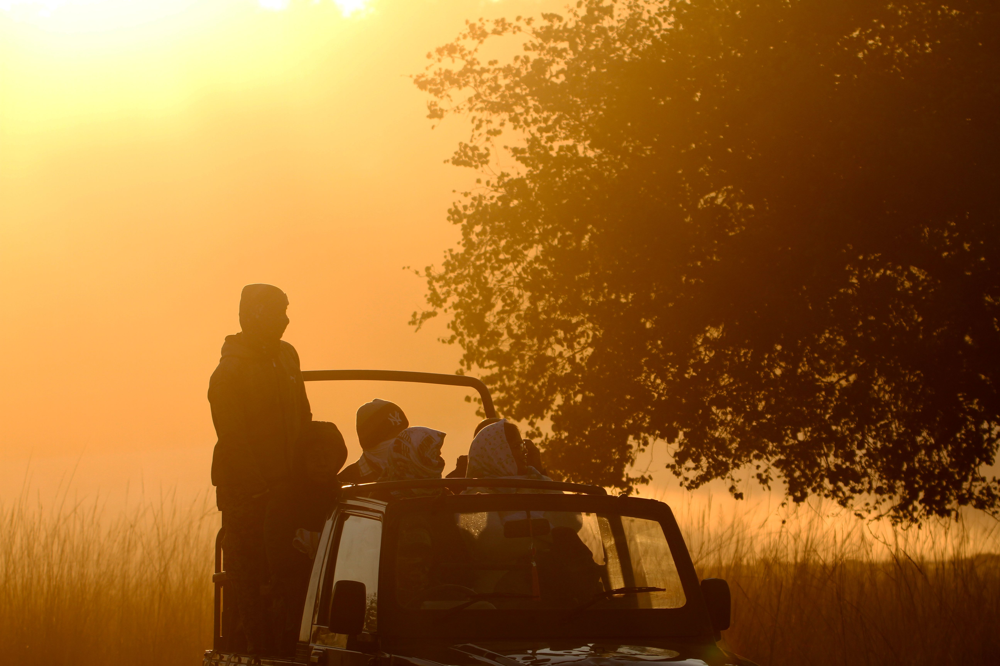

Assam
Kaziranga National Park
A classic family wildlife destination with jeep safaris, rhinos, elephants, wetlands, grasslands and rich birdlife. Kaziranga works beautifully for children, first-time wildlife travellers and families who want a safe, exciting introduction to Northeast India’s wild side.